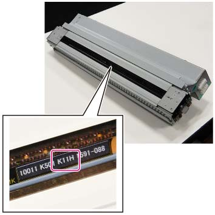

ADJ 76.3.2 Rewriting NVM值 更换时 2ND 灯 组件 
目的
更换时 the 2ND 灯 组件, rewrite the NVM值.
步骤
检查 LED 颜色 Rank 值 已指示 在...上 LED PWB 的 2ND 灯 组件 to be installed.

(图 1) ism476502
输入 DC131 NVM 读/写 和 rewrite the 值 of NVM [580-002] 到 值 listed in 下表 按照 the LED 颜色 Rank 值 已指示 在...上 LED PWB.
NVM 设置 Values NVM值
LED 颜色 Rank 值
NVM值
LED 颜色 Rank 值
000
(不适用)
010
(不适用)
001
J1D/J11D
011
K1D/K11D
002
J1E/J11E
012
K1E/K11E
003
J1F/J11F
013
K1F/K11F
004
J1G/J11G
014
K1G/K11G
005
J1H/J11H
015
K1H/K11H
006
J1J (不 已选择)
016
K1J (不 已选择)
007
J1K/J11K
017
K1K/K11K
008
J1L (不 已选择)
018
K1L (不 已选择)
009
J1M/J11M
019
K1M/K11M
In the 示例 in 图 1, the LED 颜色 Rank 值 is [K11H], so the 值 of NVM is rewritten to [015].
关闭再打开电源.